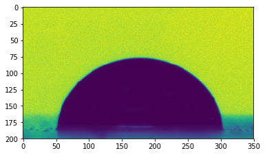

Drop Shape analysis using Python
You can get the python script detailled in this page here: script.py.
And an archive containing the script and the data here: archive.tar.gz, archive.zip.
This tutorial proposes a way of analysing the image of a drop on a SLIPS surface. At the end of it, we will have gathered the important characteristics of the drop:
- its edge
- its base radius
- the position of the triple (oil-drop-vapor) point
- the apparent contact angles
Preliminaries considerations
During this tutorial, we will need several python packages that should be installed on your environment. The majority can be installed from PyPI using the following command:
pip install imageio matplotlib numpy scipyOr for conda users:
conda install imageio matplotlib numpy scipyOpencv can be a bit more tricky. For conda users on windows, you should be able to get this working with the following command (untested):
conda install opencvImporting images
The Scipy package once provided a function to import image into python. Its documentation now recommends to use the Imageio package that supports plenty of file format (see here for an exhaustive list).
Imageio can also import video or grab images directly from a camera.
import imageio
image = imageio.imread('data/image.bmp')Images are stored as arrays of numbers. We can display them using the matplotlib package:
import matplotlib.pyplot as plt
plt.figure()
plt.imshow(image)
plt.colorbar()
plt.show()
Cropping
As we can see on the previous image, the drop is centered on the image. A part of the syringe that was used to drop is also visible at the top.
As an edge detection performed on this image will certainly detect the syringe edges, it is a good idea to restrain the area of interest around the drop:
image = image[200:400, 200:550]
plt.figure()
plt.imshow(image)
plt.show()

Edge detection
OpenCV (Open Source Computer Vision Library) is a very efficient library for image analysis that provides a python interface. We will use its edge detection functions to get the edge of our drop. More specifically, we will use the Canny edge detector.
This method necessitates to specify two threshold values. Those values have to be optimized depending on the nature/quality of the edges you want to detect. A first good guess is to take the minimal and maximal pixel values as thresholds.
import cv2
thres1 = image.min()
thres2 = image.max()
edges = cv2.Canny(image, thres1, thres2)
# Display the obtained edges
plt.figure()
plt.imshow(edges)
plt.show()
The Canny() function returns an array of number that is equal to 1 (in yellow here) where edges have been detected.
As we can see here, OpenCV succesfully detects the drop edges, but also some structures near the sample surface. Lets improve the threshold values to get rid of those unwated bits.
thres1 = image.min()*0.75
thres2 = image.max()*1.5
edges = cv2.Canny(image, thres1, thres2)
# Display the obtained edges
plt.figure()
plt.imshow(edges)
plt.show()
We get rid of some of the unwanted bits, but we still detect some edge due to the reflection of the drop on the sample. We can remove them by deletig all the edges present below the baseline, that is here toughly around y=180.
edges[180:, :] = 0
# Display the obtained edges
plt.figure()
plt.imshow(edges)
plt.show()
From image to points
Drop edge is for the moment stored as an image, if we want to access its coordinated, we need to find the pixel positions in space.
The numpy package can help us do that by detecting where the pixel values are not zero.
import numpy as np
ys, xs = np.where(edges)
ys = np.asarray(-ys, dtype=float)
xs = np.asarray(xs, dtype=float)
# Plot the edges
plt.figure()
plt.plot(xs, ys, marker='o', ls='none')
plt.axis('equal')
plt.show()
For convenience, we want to center the drop edge on the referential.
xs -= xs.mean()
ys -= ys.min()
# Plot the edges
plt.figure()
plt.plot(xs, ys, marker='o', ls='none')
plt.axhline(0, color='k')
plt.axis('equal')
plt.show()
From pixels to mm
We now know the edge position in pixel. To pass this information into millimeters, we just need to know the ratio between pixels and mm for our image.
It can be done by measuring the syringe diameter (here ~60 pixels) that we know is about 0.5mm. This give us our resolution of 120px/mm.
We then just need to scale our edge positions:
res = 120
xs /= res
ys /= res
# Plot the edges
plt.figure()
plt.plot(xs, ys, marker='o', ls='none')
plt.axhline(0, color='k')
plt.axis('equal')
plt.xlabel('x [mm]')
plt.ylabel('y [mm]')
plt.show()
Fitting the edge
Problem with the edge positions we obtained at this point is that they are at discrete positions (because extracted from an image). It is impossible as it to obtain contact angles or triple point position. We then have to find a good fitting of the drop edge on which we can work.
The Scipy package provide several ways of fitting data. Here, as we don’t care about the mathematical expression of our fitting, we will use a spline fitting.
However, we need first to ensure that our edges points are sorted (strictly increasing x values).
# Ensure increasing x values
new_xs = np.sort(list(set(xs)))
new_ys = []
for x in new_xs:
new_ys.append(np.mean(ys[xs == x]))
xs = new_xs
ys = new_ys
# Find a fit
import scipy.interpolate as spint
edge_f = spint.UnivariateSpline(xs, ys, k=5, s=0.001)
# Display the fit
plt.figure()
plt.plot(xs, ys, marker='o', ls='none')
plt.plot(xs, edge_f(xs))
plt.axhline(0, color='k')
plt.xlabel('x [mm]')
plt.ylabel('y [mm]')
plt.axis('equal')
plt.show()
Getting the drop basic properties
We can know extract some information from our data. It is quite srtaightforward to get the drop base radius and height:
base_radius = np.max(xs) - np.min(xs)
height = np.max(ys)
# Print
print("Base radius: {} mm".format(base_radius))
print("Drop height: {} mm".format(height))Base radius: 2.091666666666667 mm
Drop height: 0.85 mm